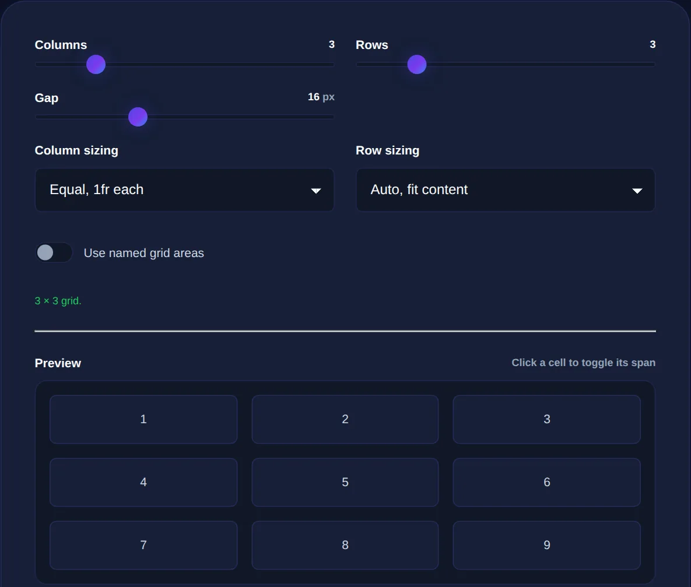

CSS Grid Explained: Building Layouts the Modern Way
CSS Grid is a two-dimensional layout system that lets you place elements into rows and columns you define, so you can build complex, responsive page layouts with far less code than older float or positioning tricks.
By Mubasher Hussain · Published 2026-07-27 · Updated 2026-10-08 · 1080 words · about 5 minute read
CSS Grid is the modern way to build two-dimensional layouts on the web, arranging elements into rows and columns at the same time. Before it, laying out a page meant wrestling with floats and other techniques never designed for the job. Grid was built specifically for layout, and it makes previously painful arrangements straightforward. The CSS Grid Generator lets you build a grid visually and copy the CSS, and this article explains the core ideas behind it.
Grid transformed web design because it lets you describe a layout in terms of the structure you actually want, this many columns, these rows, this element spanning here, rather than hacking one together from tools meant for other purposes.
What makes Grid different
The key distinction is that Grid is two-dimensional: it controls rows and columns simultaneously, whereas older methods and even flexbox primarily handle one direction at a time. This matters for real page layouts, a header, sidebar, main content and footer, which are inherently two-dimensional arrangements. With Grid, you define the overall structure on the container and place items into it, rather than each item having to fit itself into a flow. This top-down control over both dimensions is what makes complex layouts simple and, crucially, easy to rearrange for different screen sizes.

The core concepts
A handful of ideas underpin everything in Grid:
- Grid container: the element you turn into a grid; its direct children become grid items.
- Tracks: the rows and columns you define, whose sizes you can set in fixed units, flexible fractions, or automatically.
- The fr unit: a fraction of the available space, which makes flexible, proportional columns effortless.
- Lines and spans: items are placed between numbered grid lines and can span multiple tracks.
- Gaps: consistent spacing between rows and columns, set with a single property.
- Named areas: you can name regions of the grid and place items into them by name, making the layout readable.
The named-areas feature is especially elegant: you can sketch your layout as a little map in the CSS, which makes the structure obvious at a glance.
Grid excels at two-dimensional page structure; flexbox excels at one-dimensional rows or columns of items, like a navigation bar. Most real designs use both, Grid for the overall layout, flexbox for the components within it.
How Grid makes responsive design simple
One of Grid's greatest strengths is responsive layout. Because the structure is defined on the container, you can redefine it at different screen sizes with very little code, turning a multi-column desktop layout into a single stacked column on mobile by changing the grid definition, without touching the individual items. Grid also offers powerful features for automatic responsiveness, where the grid fits as many columns as will comfortably fit and wraps the rest, creating layouts that adapt to any screen width with almost no media queries. This is a dramatic simplification of what used to require extensive, fragile code.
Building a grid without memorising syntax
Grid is powerful but its syntax takes time to learn, which is exactly where a visual generator helps. Rather than memorising the properties, you can define columns, rows, gaps and spans visually, see the layout update, and copy the generated CSS. This is a fast way both to produce a layout and to learn the syntax by seeing how visual choices map to code. Once generated, keeping your HTML structure clean with an HTML formatter makes the grid easier to reason about, since Grid places the container's direct children.
Build a CSS grid layout visually, columns, rows, gaps and spans, and copy the code, entirely in your browser.
Grid in a complete layout
Grid provides the skeleton that other design details hang on. Within a grid's cells sit cards with rounded corners and shadows, content laid out with flexbox, and backgrounds and colors from your design system. Grid's job is the overall arrangement, where everything goes, while these other properties handle how each piece looks. Together they turn a flat document into a structured, responsive, polished layout.
Grid areas: sketching a layout in code
One of CSS Grid's most elegant features is named grid areas, which let you describe a layout almost pictorially. You give regions of the grid names, header, sidebar, main, footer, and then place each element into its named area, while a template property lets you literally draw the arrangement as a small text diagram in the code, rows of names that visually mirror the finished layout. Reading that template, anyone can see the structure at a glance: where the header spans, where the sidebar sits, how the main content fills the rest.
This readability is a real maintenance advantage. Rearranging the layout for a different screen size becomes a matter of rewriting that little text diagram, moving the sidebar below the main content on mobile, say, without touching the elements themselves, because each element simply occupies whatever area carries its name. It makes responsive changes both concise and self-documenting, which is a stark contrast to the tangled, hard-to-follow layout code of earlier techniques. Named areas also encourage you to think about a page's structure in clear, semantic terms, these are the meaningful regions, this is how they relate, rather than in terms of pixel positions and floats. For anyone learning Grid, named areas are often the concept that makes it 'click', because they connect the abstract idea of a two-dimensional layout system to something you can see and sketch. Combined with the flexible track sizing and gaps covered earlier, they make CSS Grid not just powerful but genuinely pleasant to author, which is not something that could be said of the layout methods it replaced.
To recap: CSS Grid is a two-dimensional layout system built specifically for arranging elements into rows and columns, which makes real page layouts, and rearranging them for different screens, far simpler than older methods. Its core ideas are the grid container, sized tracks, the flexible fr unit, line-based placement, gaps and named areas. It pairs with flexbox rather than replacing it, and it makes responsive design remarkably concise. Whether you build grids by hand or with a generator, understanding these concepts unlocks the modern, structured approach to web layout.